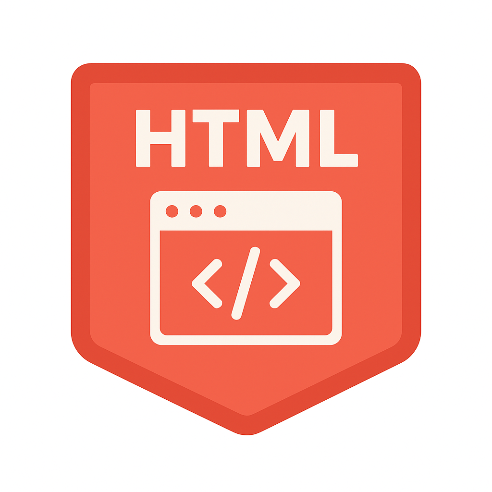
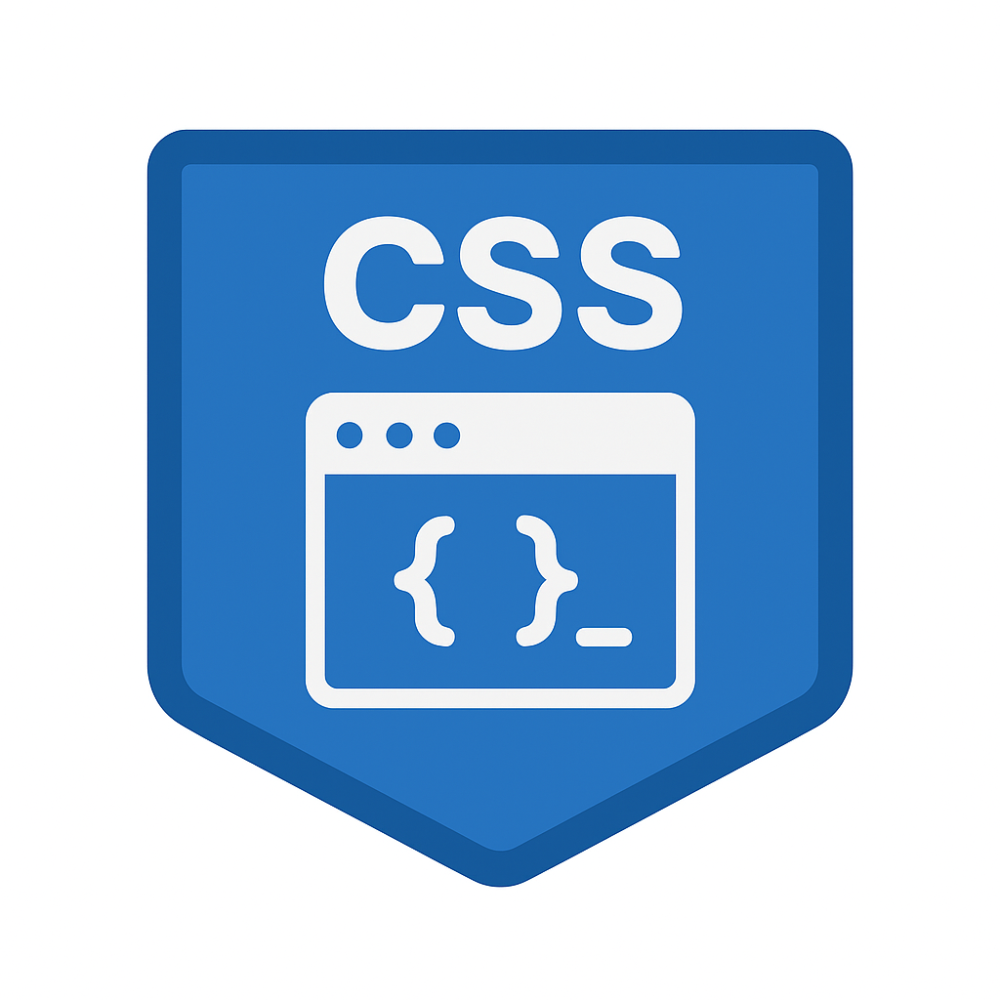
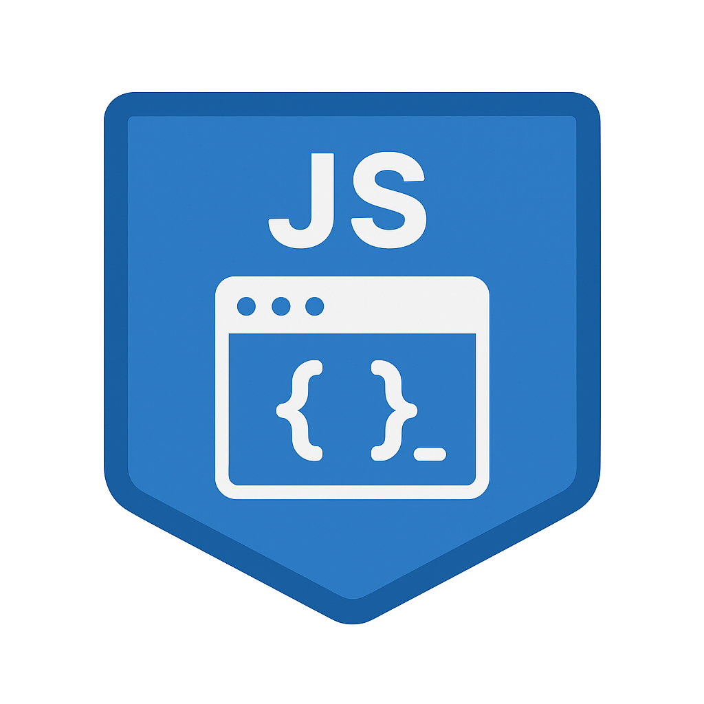

<div class="container text-center text-white my-2">

  <div class="row mb-4">
    <div class="col">
      <h2 >Podstawowe technologie webowe</h2>
  </div>

  <div class="row g-4">
    <div class="col-sm-4">
      <div class="border rounded-4 bg-white">
        <h4 class="m-3 text-dark">HTML</h4>
        
        <p class="text-dark">Struktura dokumentu</p>
        <p id="opis_html" class="m-3 text-dark" style="display:none">HTML (HyperText Markup Language) to podstawowy język służący do tworzenia struktury stron internetowych. Pozwala definiować nagłówki, akapity, obrazy, linki oraz formularze.
         Dzięki HTML przeglądarka wie, jakie elementy mają pojawić się na stronie. Jest fundamentem każdej aplikacji webowej. Bez HTML strona internetowa nie mogłaby istnieć.</p>
        <button type="button" id="htmlButt" class="btn btn-secondary m-2">Więcej informacji</button>
      </div>
    </div>

    <div class="col-sm-4">
      <div class="border rounded-4 bg-white">
        <h4 class="m-3 text-dark">CSS</h4>
        
        <p class="text-dark">Stylowanie i layout</p>
        <p class="m-3 text-dark" id="opis_css" style="display:none">CSS (Cascading Style Sheets) odpowiada za wygląd i styl stron internetowych. Umożliwia nadawanie kolorów, czcionek, układów oraz animacji elementom HTML. Dzięki CSS strony są
        estetyczne i responsywne. Pozwala oddzielić warstwę wizualną od struktury strony. Jest kluczowy w nowoczesnym web designie.</p>
        <button type="button" id="cssButt" class="btn btn-secondary m-2">Więcej informacji</button>
      </div>
    </div>

    <div class="col-sm-4">
      <div class="border rounded-4 bg-white">
        <h4 class="m-3 text-dark">JavaScript</h4>
        
        <p class="text-dark">Logika i interakcje</p>
        <p id="opis_js" class="m-3 text-dark" style="display:none">JavaScript to język programowania, który dodaje interaktywność stronom internetowym. Umożliwia reagowanie na działania użytkownika, takie jak kliknięcia czy formularze. Jest 
            podstawą działania aplikacji typu SPA. Dzięki JavaScript możliwa jest komunikacja z serwerem bez przeładowania strony. To jeden z najważniejszych języków webowych.</p>
        <button type="button" id="jsButt" class="btn btn-secondary m-2">Więcej informacji</button>
      </div>
    </div>
  </div>
</div>